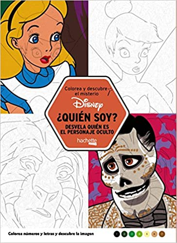

Libro con 100 dibujos para colorear de la colección Colorea y descubre el misterio, en el que lector tendrá que seguir los códigos de números y letras para colorear cada zona de la ilustración y descubrir, pincelada a pincelada, de qué personaje se trata. En este caso, hay un atractivo añadido: la silueta que se muestra como pista hace pensar en un personaje, por ejemplo, Simba de cachorro, pero al colorear se va desvelando quién estaba realmente escondido entre las líneas, en este caso, Simba adulto. Un libro con el que encontrar momentos para estar con uno mismo realizando una actividad creativa.
